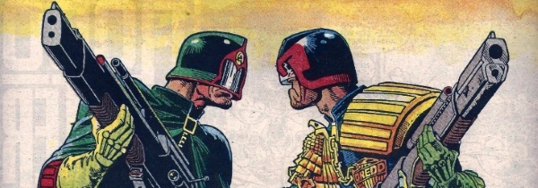

A poster series that had been used as covers for Eagle reprints of Judge Dredd stories.
Art by Brian Bolland
| Title | Parts | Pages | w indicates a wraparound coverCovers | Year(s) | Issues | Writer | Artist | Colourist | Letterer |
|---|---|---|---|---|---|---|---|---|---|
| The Cursed Earth: Progs 61-85 | 1 | 1 | 0 | 1985 | 436 | n/a | Brian Bolland | <-- | n/a |
Linked to Satanus After prog 74 cover.The Cursed Earth: Progs 61-85 | 1 | 1 | 0 | 1985 | 437 | n/a | Brian Bolland | <-- | n/a |
| The Luna War: Prog 51 | 1 | 1 | 0 | 1985 | 440 | n/a | Brian Bolland | <-- | n/a |
| Judge Death Lives: Progs 224-228 | 1 | 1 | 0 | 1985 | 441 | n/a | Brian Bolland | <-- | n/a |
| Bring Me the Head of Judge Dredd: Prog 88 | 1 | 1 | 0 | 1985 | 444 | n/a | Brian Bolland | <-- | n/a |
| Monkey Business: Progs184-185 | 1 | 1 | 0 | 1985 | 445 | n/a | Mike McMahon | <-- | n/a |
| Punks Rule: Prog 110 | 1 | 1 | 0 | 1985 | 447 | n/a | Brian Bolland | <-- | n/a |
| Judge Fish: Prog 90 | 1 | 1 | 0 | 1985 | 448 | n/a | Brian Bolland | <-- | n/a |
| Dredd's Guerilla War: Prog 98 | 1 | 1 | 0 | 1985 | 449 | n/a | Mike McMahon | <-- | n/a |
| Dredd vs. Fergee: Prog 101 | 1 | 1 | 0 | 1986 | 451 | n/a | Mike McMahon | <-- | n/a |
| Return to Mega-City 1: Prog 59 | 1 | 1 | 0 | 1986 | 452 | n/a | Mike McMahon | <-- | n/a |
| year | episodes | pages |
| 1977 | 0 | 0 |
| 1978 | 0 | 0 |
| 1979 | 0 | 0 |
| 1980 | 0 | 0 |
| 1981 | 0 | 0 |
| 1982 | 0 | 0 |
| 1983 | 0 | 0 |
| 1984 | 0 | 0 |
| 1985 | 9 | 9 |
| 1986 | 2 | 2 |
| 1987 | 0 | 0 |
| 1988 | 0 | 0 |
| 1989 | 0 | 0 |
| 1990 | 0 | 0 |
| 1991 | 0 | 0 |
| 1992 | 0 | 0 |
| 1993 | 0 | 0 |
| 1994 | 0 | 0 |
| 1995 | 0 | 0 |
| 1996 | 0 | 0 |
| 1997 | 0 | 0 |